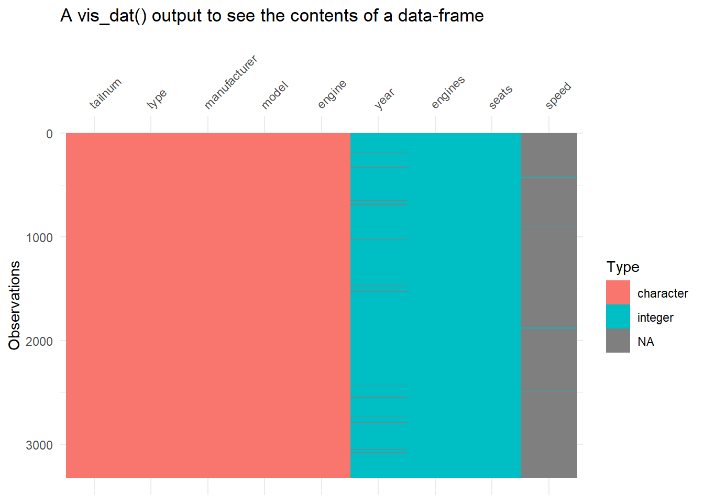
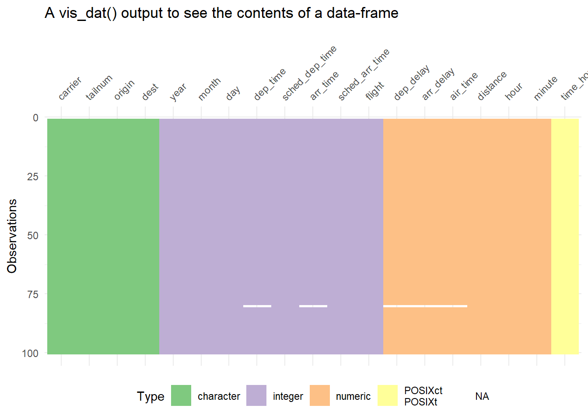
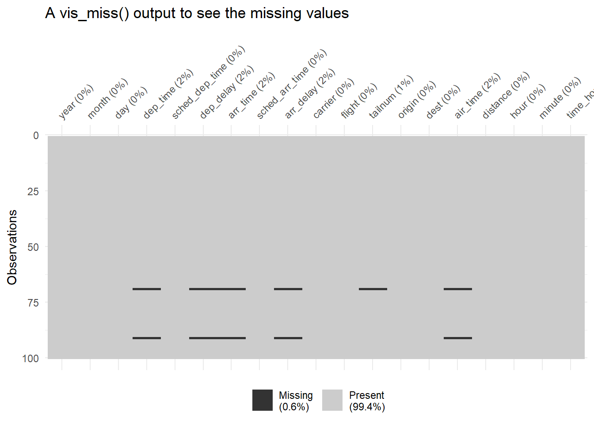
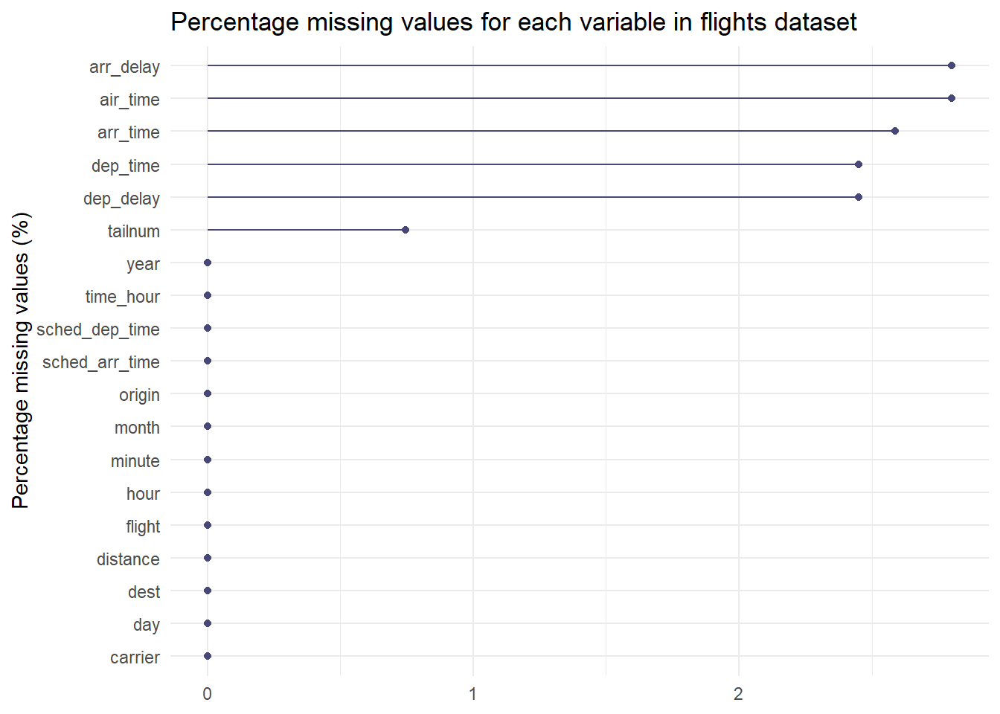
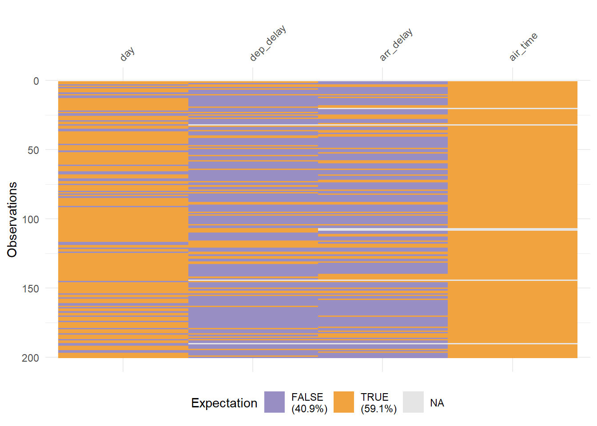

library(tidyverse)
library(janitor)
library(gt)
library(gtExtras)Chapter 19
Missing Values
19.3.4 Exercises
Question 1
Can you find any relationship between the carrier and the rows that appear to be missing from planes?
Yes, as we can see in the Table 1 , the airline carriers MQ and AA have most of their aircrafts’ tail numbers missing from the planes data-set, apart from few other carriers that have a small percentage of their data missing.
library(nycflights13)
data("flights")
data("planes")
# Create a vector of carriers that have tailsnums missing in planes
car_vec = flights |>
distinct(tailnum, carrier) |>
anti_join(planes) |>
distinct(carrier) |>
as_vector() |>
unname()
# Find total tailnums for these carriers
total_tails = flights |>
filter(carrier %in% car_vec) |>
group_by(carrier) |>
summarize(
total_aircrafts = n_distinct(tailnum)
)
flights |>
distinct(tailnum, carrier) |>
anti_join(planes) |>
count(carrier, name = "missing_tailnums") |>
full_join(total_tails) |>
mutate(percentage_missing = missing_tailnums/total_aircrafts) |>
arrange(desc(percentage_missing)) |>
gt() |>
gt_theme_538() |>
cols_label_with(fn = ~ janitor::make_clean_names(., case = "title")) |>
fmt_percent(columns = percentage_missing) |>
tab_style(
style = list(cell_text(weight = "bold") ),
locations = cells_body(columns = percentage_missing)) | Carrier | Missing Tailnums | Total Aircrafts | Percentage Missing |
|---|---|---|---|
| MQ | 234 | 238 | 98.32% |
| AA | 430 | 601 | 71.55% |
| F9 | 3 | 26 | 11.54% |
| FL | 12 | 129 | 9.30% |
| UA | 23 | 621 | 3.70% |
| US | 9 | 290 | 3.10% |
| DL | 10 | 629 | 1.59% |
| B6 | 3 | 193 | 1.55% |
| WN | 3 | 583 | 0.51% |
| 9E | 1 | 204 | 0.49% |
Other practice stuff
Since this chapter has only one question, I will also explore another package naniar(Tierney and Cook 2023) and visdat(Tierney 2017)that deals with missing values. Some key learning: –
library(naniar)
library(visdat)
library(nycflights13)
data("flights")Visualize a data.frame to see what it contains
planes |> vis_dat() + labs(title = "A vis_dat() output to see the contents of a data-frame")
flights |> slice_sample(n = 100) |> vis_dat() + labs(title = "A vis_dat() output to see the contents of a data-frame", col = "Type of variable") + theme(legend.position = "bottom") + scale_fill_brewer(palette = "Accent")
Show missingness in particular, with percentages: –
flights |> slice_sample(n = 100) |> vis_miss() + labs(title = "A vis_miss() output to see the missing values", col = "Type of variable")
Show the proportion of missingness for each variable
flights |> gg_miss_var(show_pct = TRUE) + labs(title = "Percentage missing values for each variable in flights dataset", y = NULL, x = "Percentage missing values (%)")
To replace a value, say “99” or “-99” with
NA, we usenaniar::replace_with_na()ordplyr::na_if(). To replaceNAwith a given value we use,dplyr::replace_na()Using
vis_expect()to see values that fulfill certain conditionsflights |> select(day, dep_delay, arr_delay, air_time) |> slice_sample(n = 200) |> vis_expect(~.x >= 10)
References
Tierney, Nicholas. 2017. “Visdat: Visualising Whole Data Frames” 2: 355. https://doi.org/10.21105/joss.00355.
Tierney, Nicholas, and Dianne Cook. 2023. “Expanding Tidy Data Principles to Facilitate Missing Data Exploration, Visualization and Assessment of Imputations” 105. https://doi.org/10.18637/jss.v105.i07.